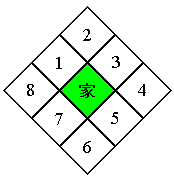

| 概要 | 情報 | ステージ攻略 |
| 地図 | テクニック | モナモナ攻略へ |
|
家と畑の関係 家の周囲に作られる畑は、下の画像の順番で作られていきます。  また、画像の1 の位置に畑ができるのは、家のDF が10 となった時です。同様に、2 の位置にはDF：20 の時、3 の位置にはDF：30 の時に畑ができます。 ただし、畑ができると家のDF が10 下がります。 もし別の家によって作られた畑がある場合は、数字が小さい場所から畑が作られていきます。 この法則は覚えておいて、たぶん損はないと思います。たぶん。 |
|
ユニットの限界を利用して速く領土を埋める(仮説) テクニックの4 で書いたように、ステージ上に出るユニットの数には上限があります。 逆にこれを利用し、領土を速く埋めることができそうです。詳しい内容は以下のとおり。 ステージ攻略の最後のツメで自国のユニット数を上限まで誕生させます。そして、敵の領土を攻めている体重が200g 以上のユニットに家を建てさせると、ユニットが生まれないため、その家はDF：100 の状態のまま維持されます。 それなので、もしかしたら通常よりも畑が速く作られるのかもしれません。 |
| 概要 | 情報 | ステージ攻略 |
| 地図 | テクニック | モナモナ攻略へ |